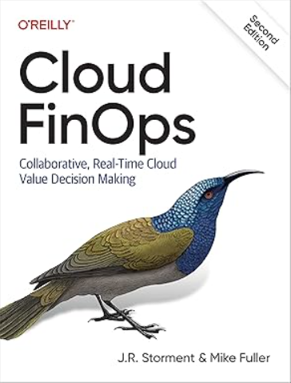
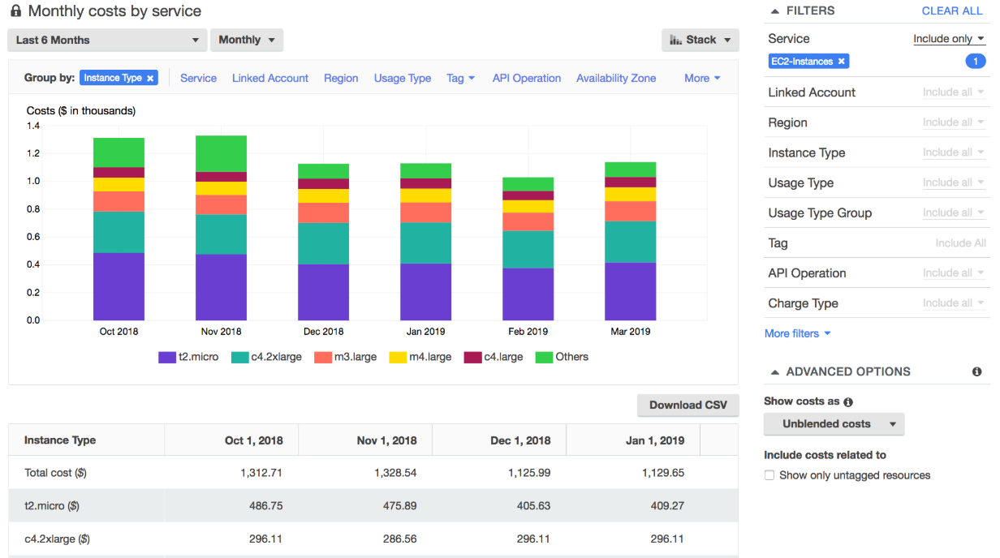
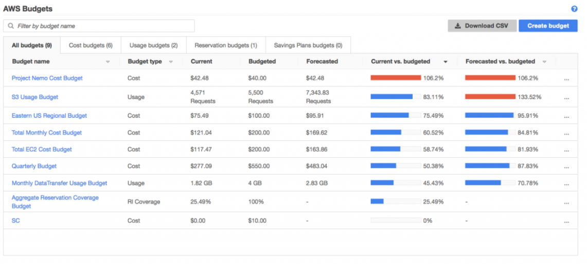
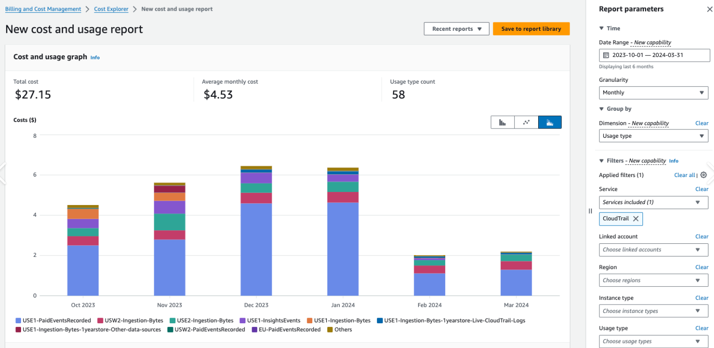
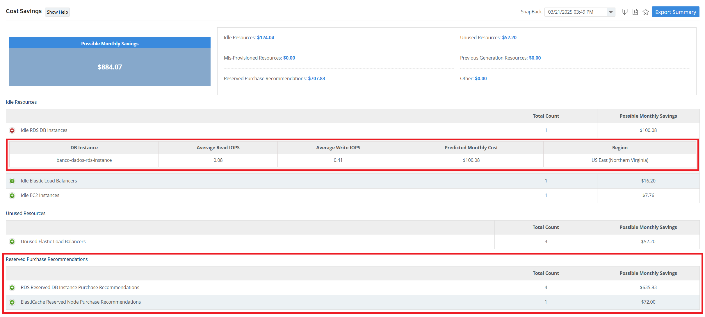
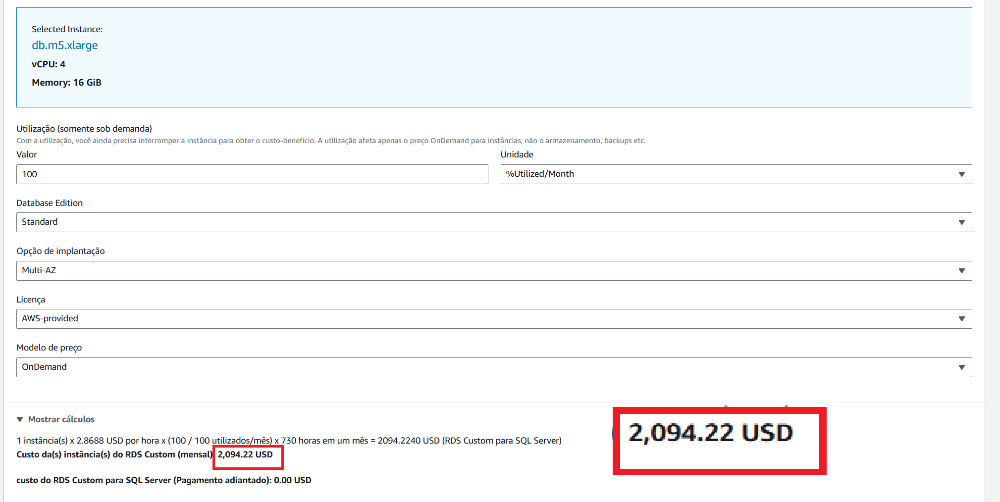
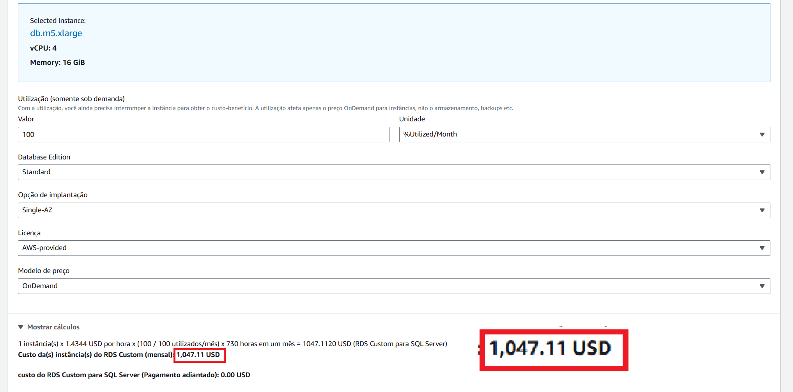
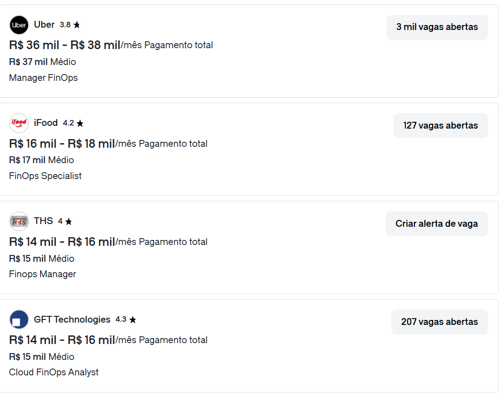
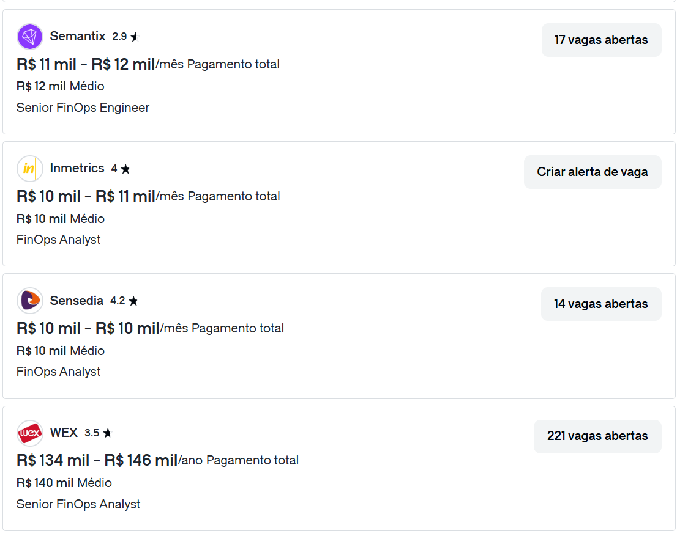

Cultura FinOps
Otimização de Custos e Melhores Práticas AWS
O que é FinOps?
"FinOps é um framework operacional e prática cultural que maximiza o valor comercial da nuvem e tecnologia, permite a tomada de decisões orientada por dados em tempo hábil e cria responsabilidade financeira através da colaboração entre as equipes de engenharia, finanças e negócios."
FinOps Foundation Technical Advisory Council
Atualizado: Janeiro 2025
Atualizado: Janeiro 2025
História do FinOps
2019
Surgimento do termo com J.R. Storment e Mike Fuller
2020
Fundação da FinOps Foundation
2021
FinOps Foundation se junta à Linux Foundation
2023
Mais de 5500 empresas membros em todo o mundo
Leitura recomendada
Gerenciamento de Custos AWS
- AWS Cost Explorer
- AWS Budgets
- Relatório de Custos e Uso da AWS
- Instâncias Reservadas e Planos de Economia
AWS Cost Explorer
AWS Budgets
Relatório de Custos e Uso
Instâncias Reservadas e Savings Plans
Criando uma instancia EC2
Calculadora de Preços AWS
- Ferramenta gratuita para estimar custos AWS
- Crie estimativas de custos para seus casos de uso
- Compare diferentes configurações de serviços
- Exporte estimativas para compartilhamento
Custo RDS Multi-AZ
Custo RDS Single-AZ
Melhores Práticas de Otimização de Custos
- Dimensionamento correto de instâncias
- Utilização de auto-scaling
- Implementação de tags de alocação de custos
- Revisões e otimizações regulares de custos
Ferramentas e Recursos
- AWS Cost Explorer
- Cloud checkr
- AWS Budgets
- Métricas do CloudWatch
Estratégia de Implementação
- Comece com a visibilidade de custos
- Adicione Tags em recursos
- Configure orçamentos e alertas
- Implemente práticas de otimização de custos
- Faça revisões e ajustes regulares
Comparativo de Custos: EC2
| Instância | São Paulo | N. Virginia | Diferença |
|---|---|---|---|
| t3.micro | $0.0208/hora | $0.0104/hora | +100% |
| t3.small | $0.0416/hora | $0.0208/hora | +100% |
Comparativo de Custos: RDS
| Instância | São Paulo | N. Virginia | Diferença |
|---|---|---|---|
| db.t3.micro | $0.034/hora | $0.017/hora | +100% |
| db.t3.small | $0.068/hora | $0.034/hora | +100% |
Comparativo de Custos: Transferência de Dados
| Tipo | São Paulo | N. Virginia | Diferença |
|---|---|---|---|
| Saída Internet | $0.154/GB | $0.09/GB | +71% |
| Entre Regiões | $0.16/GB | $0.02/GB | +700% |
Comparativo de Custos Mensais (24/7)
| Recurso | São Paulo | N. Virginia | Economia Mensal |
|---|---|---|---|
| EC2 t3.micro | $15.18 | $7.59 | $7.59 |
| RDS db.t3.micro | $24.82 | $12.41 | $12.41 |
| 100GB Tráfego/mês | $15.40 | $9.00 | $6.40 |
| Total Mensal | $55.40 | $29.00 | $26.40 |
Cálculo baseado em: 730 horas/mês (24/7)
Economia anual potencial: $316.80
Dicas de Otimização Regional
- Considere latência vs. custo para produção
- Planeje transferências de dados entre regiões
- Use CloudFront para distribuição de conteúdo
- Considere Reserved Instances em regiões mais caras
Mercado de Trabalho: DevOps com FinOps
Mercado de Trabalho: DevOps com FinOps
Dúvidas?
Obrigado pela atenção!